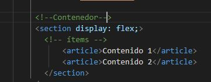
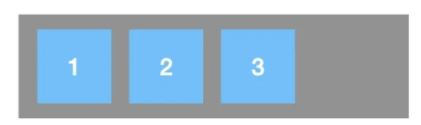
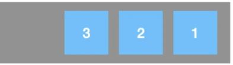
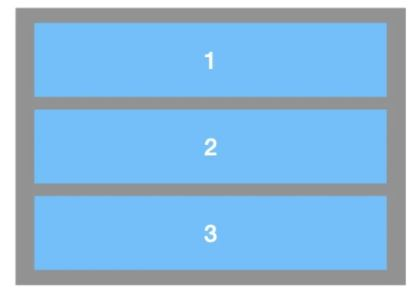
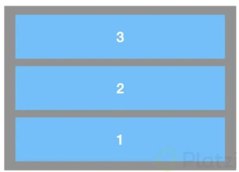
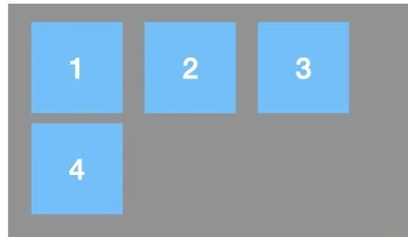

Introducción a Flexbox
Que es Flexbox
FLEX es una nuevo atributo de HTML5 correspondiente a la facilidad de CSS display basado en un contenedor con la propiedad de heredar los atributos a todos los elementos que contenga. Es decir, puedo definir todos los atributos en cuanto diseño, alineación, estilo etc y aplicarlos a todos los elementos dentro del contedorActualmente con FLEXBOX podemos hacer:
- 1. Ordenar eficientemente el contenido sin tocar el codigo HTML
- 2. Alinear los elementos tanto horizontal como verticalmente
- 3. Generar menos codigo y crear diseños mas flexibles
Imagen recuperada de: Camacho, A. (2020). Diseño [Gráfico]. En Flexbox explicado con manzanita (1.a ed., p. 1). Cita en el texto
A continuación explicaremos sus partes:
contenedor
Este es el elemento sobre el que se diseñarán los demas elemntos. se divide en dos grandes ejes:- Eje Principal: Los componentes tomarán una orientación sea horizontal (filas) o vertical (columnas) segun se requiera, por defecto el valor es Row (Filas)
- Eje Secundario: Los elementos de ese eje tomarán la posición contraria al eje principal, es decir si el eje princial es Row (Filas) el eje segundario será Column (Columnas)
Item
Corresponde a cada uno de los elementos creados dentro del contenedor, se veria de la siguiente manera- 
Notese que en la etiqueta Section se encuentra el atributo display el cual funciona volver el contenedor flexible
Dar dirección a los ejes
usaremos la propiedad flex-flow la cual tendrá dos atributos posibles:En el primero definiremos si el eje principal sera una fila o una columna y también el orden de cada uno de los item
- ROW El cual permite alinear hacia en fila un listado de item de derecha a izquierda
- Row Rever El cual permite alinear hacia en fila un listado de item de izquierda a derecha
- COLUMN Permite crear columnas con item ordenados ascendente
- COLUMN-REVERSE Permite crear columnas con item ordenados descendente




En el Segundo Se establece si el item puede o no desbordarse del limite del contenedor
- WRAP NO Permite que el item se desborde del limite
- NOWRAP SI permite que el item se desborde del limite


A modo de ejemplo el codigo quedaria así